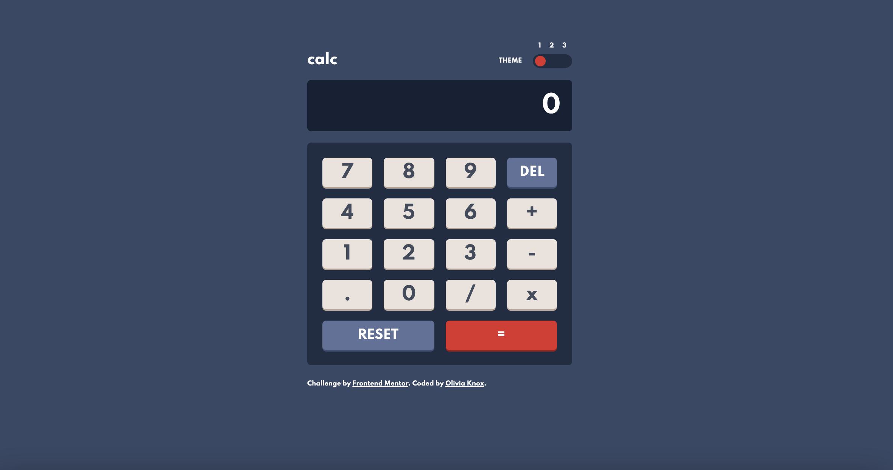
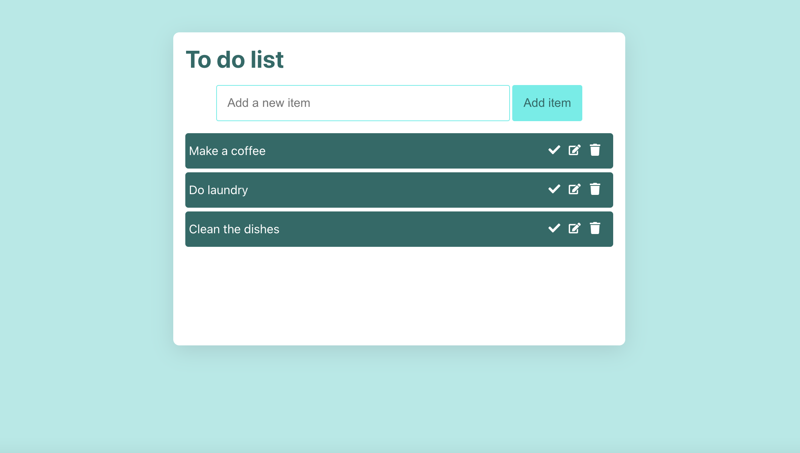
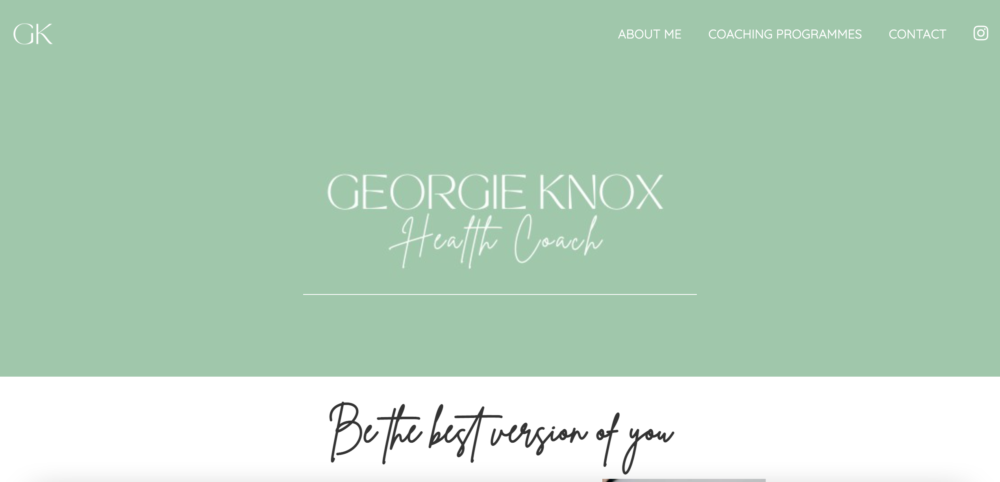
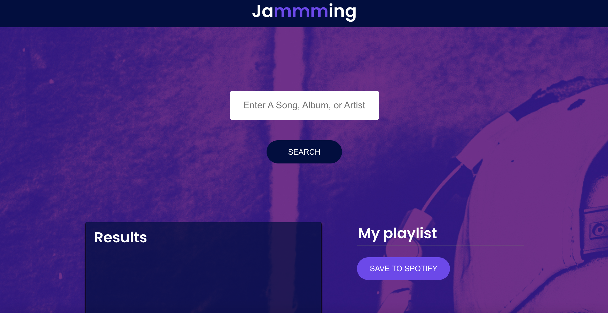
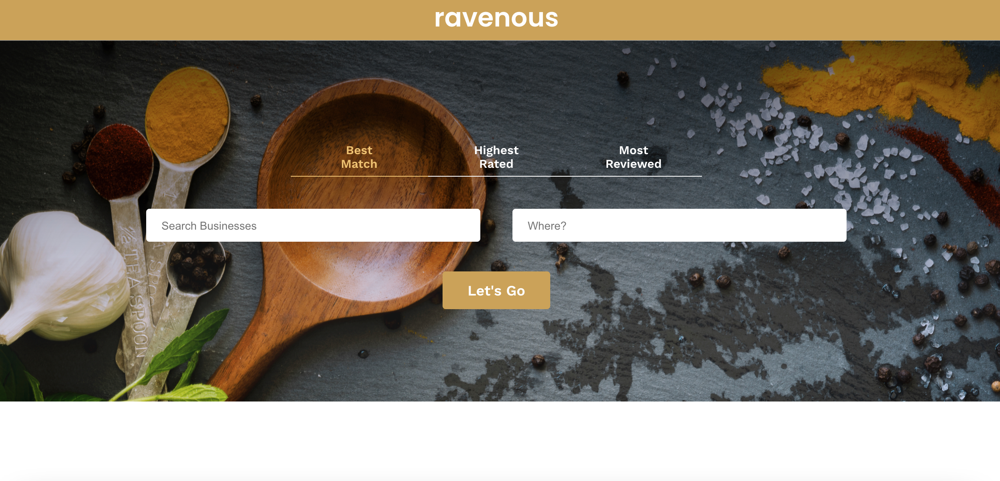
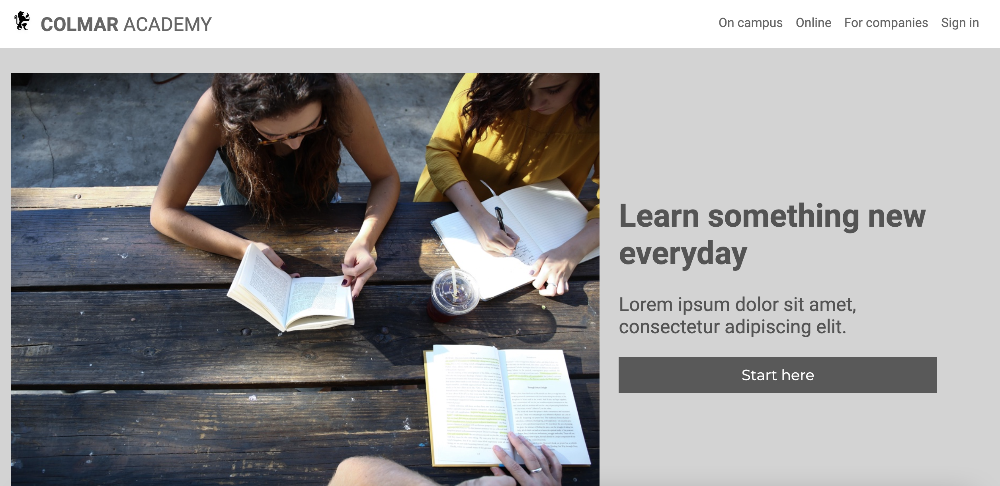

Olivia Knox
Please click on one of the links below to find out more!
About
British front-end developer currently living in Bangkok & looking for a front-end developer role.
I have been teaching myself HTML, CSS, JS & React through completing the following courses on Codecademy.com:
- Build a website with HTML, CSS and Github Pages
- Learn Javascript
- Create a front-end app with React
I'm currently working through the 'front-end engineer' career path on Codecademy.com. Whilst also supplementing my learning with Google & other website such as freecodecamp & frontendmentor.

Skills
Contact
Projects

Calculator app with theme toggle built using HTML, CSS & JS.
Project from Frontend Mentor.




